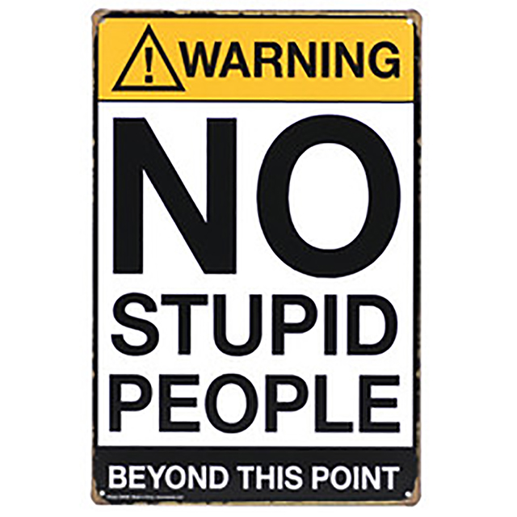

adj. Desprovido de inteligência; que expressa estupidez, ignorância:
tarefa estúpida; sujeito estúpido; opinião estúpida.
Dicionário
Eu juro. Bom, talvez não, quem tem que dizer são os outros afinal. Mas eu me acho legal. Sou teimosa, sou impaciente, impulsiva e sou muito ansiosa, mas sou legal.
Eu gosto de ler e sou viciada em séries. Sou bastante comunicativa, escrevo com certa regularidade, adoro conversas longas e vagas, profundas e sérias, acho que sou colecionadora de histórias, tenho tantas guardadas...
Mas é claro que todos tem um tempo de reclusão, quando preferem ficar quietinhos em posição fetal deitados na cama. Eu passei uma fase quietinha, calada, na minha. Eu sou filha única, ficar bem sozinha nunca foi um problema, mas humano é um bicho de comunidade. Nascemos para viver em grupo, por mais que seja um grupo pequeno.
Tem dias que eu tô afim de bagunça, de reunir uma galera, comer, beber e conversar até tarde, mas tem dias que evito contato com qualquer homo sapiens. Devo que confessar que depois que eu ouvi que somos a média das cinco pessoas que a gente mais convive (Jim Rohn), deixei de conviver com muita gente.
Simplesmente por não termos as mesmas visões de mundo, ou os mesmos objetivos, cheguei a conclusão que não estávamos nos ajudando muito pelo contrário, e como diz o ditado, "ajuda muito quem não atrapalha".
Eu sinto muito não ter conseguido contribuir para que essas pessoas, amigos queridos em determinado momento da minha vida, continuassem a evoluir, se tornando leitores assíduos, continuando ou voltando a estudar, progredindo em sua carreira e vida pessoal. Mas eu falhei, milhões de vezes eu miseravelmente falhei. Muitas dessas pessoas hoje, não lê, não voltou a estudar, mas continua sua vida, alegremente.
Eu sou exigente para um caralho eu sei, mas aceitei que nem todos crescem na mesma velocidade e tem gente que vai a meu ver vai morrer com uma visão e um entendimento do mundo extremamente pequeno. É uma pena, mas finalmente parei de me responsabilizar pelo amadurecimento do mundo e assumi apenas o meu.